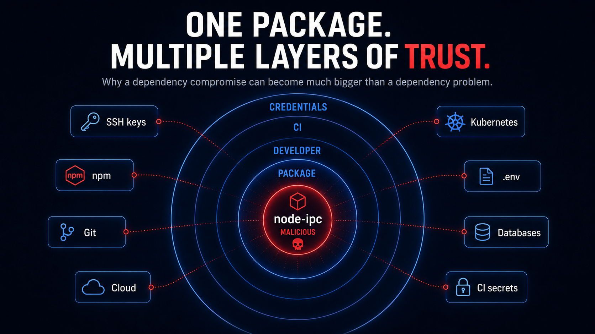
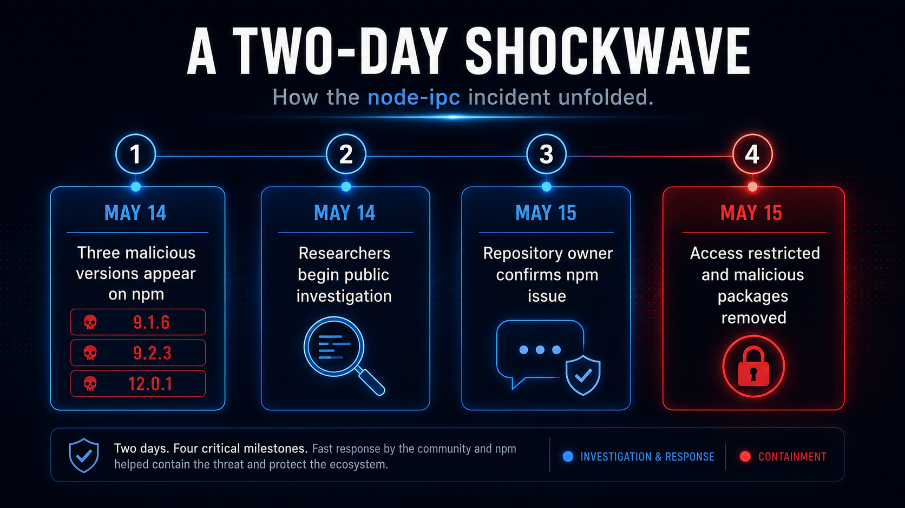
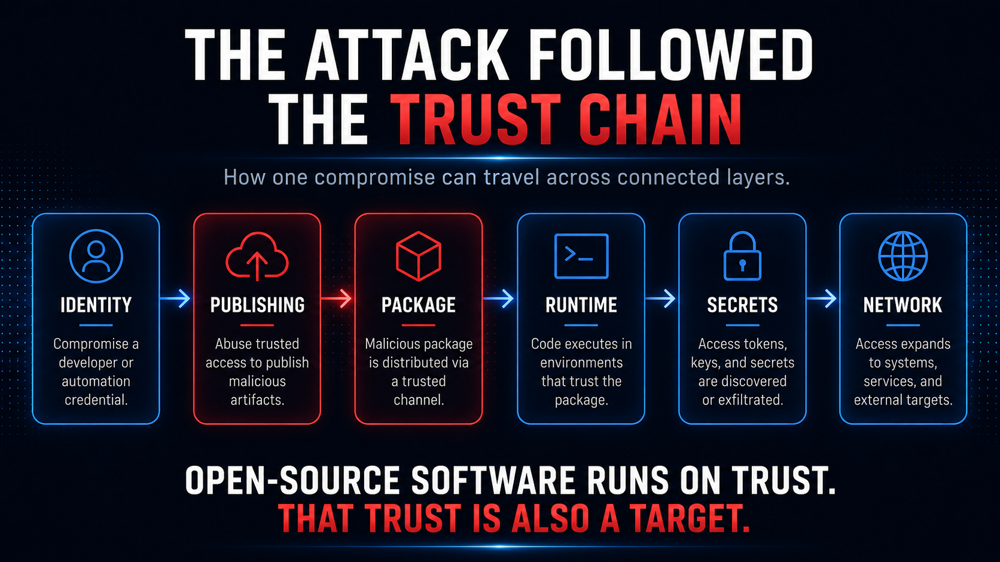

On May 14, 2026, a developer opening the node-ipc project on GitHub would have seen little reason for alarm. The upstream repository still pointed to version 12.0.0, the project looked much as it had before, and nothing about the familiar source page suggested that the package had become the center of a security incident. But the software arriving through npm was no longer telling the same story.
That day, three malicious versions of node-ipc—9.1.6, 9.2.3, and 12.0.1—appeared through the official npm distribution channel. The discrepancy was small enough to fit inside a version number, yet large enough to expose one of the software industry's most consequential assumptions: the code developers inspect and the package they install are not necessarily governed by the same systems, credentials, or trust relationships.
For most developers, the distinction is almost invisible. GitHub is where a project is read, discussed, and reviewed; npm is where the package is retrieved. In ordinary use, they feel like two windows onto the same thing. The node-ipc incident made clear that they are not. A source repository can remain unchanged while the distribution path around it changes completely.
That was what made the incident larger than a story about malicious code. The package name remained familiar, the installation command remained familiar, and the project developers recognized was still there. What had changed was the chain of authority behind the package being delivered to them.
Modern software depends on that chain. Applications are assembled from libraries, frameworks, build tools, and packages maintained by people all over the world. Every installation carries a quiet promise that the software arriving through a registry is the software its maintainers intended to publish.
The node-ipc incident began when that promise broke.
The package was only the beginning
Open-source software works because developers do not build everything themselves. A modern application may rely on hundreds or thousands of components maintained by people the application team will never meet. That arrangement is one of software's great force multipliers: small teams can build enormous systems because they inherit years of work from the ecosystem around them.
They inherit something else as well. Every dependency brings assumptions about who controls it, how releases are published, and what the package will be allowed to do once it reaches a developer workstation or CI environment. Most of those assumptions remain invisible until one of them fails.
The malicious node-ipc releases were designed to inspect developer and CI environments for sensitive information. Their targets included SSH keys, cloud credentials, Kubernetes configuration, package-manager credentials, source-control credentials, database configuration, .env files, shell history, and other developer-tool settings. These were not simply interesting files on a machine; many represented access to the systems developers use to build, deploy, and operate software.
That proximity is what gave the compromise its reach. A third-party package running in a development environment may sit only a few steps away from private repositories, cloud accounts, deployment infrastructure, and production-adjacent systems. The dangerous part of a malicious dependency is therefore not only the code inside it, but the environment that agrees to run it.

A compromised dependency does not need to attack every downstream system directly. If it reaches an environment that already possesses legitimate access, some of the hardest work has already been done for it.
The package was not valuable because of what it contained. It was valuable because of where developers were willing to run it.
Forty-eight hours
Once researchers recognized the malicious releases, the incident moved quickly. On May 14, a public GitHub issue documented the malicious 12.0.1 package and researchers began examining the releases, the publishing identity behind them, and the difference between what existed in npm and what remained visible upstream.
That difference became the defining clue. The GitHub project was still on 12.0.0; npm contained releases that did not belong to the same source history. Investigators were not simply looking at unwanted code merged into a repository. They were looking at a distribution path that had separated from it.

By May 15, the repository owner had publicly confirmed that the malicious package was present on the official npm channel. Write access was restricted, credentials other than the owner's were revoked, and the malicious tarballs were reported removed. In little more than a day, a familiar open-source dependency had become the center of an ecosystem-wide security response.
The speed matters because trust accumulates slowly while compromise can happen all at once. A package may spend years becoming ordinary enough that nobody thinks twice about installing it. Then a change in publishing authority can alter what that familiar name delivers in a matter of hours. The interface may look the same. The command may be the same. The habit of trust may be the same. The thing at the other end no longer is.
The identity nobody was watching
The most revealing part of the incident was not hidden deep inside JavaScript. It was attached to an old email address.
Publication metadata pointed investigators toward a dormant maintainer identity associated with an address at atlantis-software.net. The domain had lapsed and later returned under new control, and investigators found working mail infrastructure for it after the incident. An identity that looked historical and unimportant had become relevant again because publishing authority can outlive the person or organization that originally created it.
That is an uncomfortable property of account recovery. A publishing account is not secured only by its current password or MFA configuration; it can also depend on old email addresses, old domains, recovery workflows, collaborator lists, and permissions that nobody has reviewed in years. When those pieces remain connected, abandoned identity infrastructure can quietly remain part of the software supply chain.
The node-ipc investigation put that problem in unusually concrete terms. A forgotten maintainer domain was not merely a web property that had expired. It was part of an identity chain connected to package publishing. Once an old identity becomes useful again, the consequences can travel forward into systems that still trust it.
For maintainers, the lesson is simple: dormant publishing authority is security debt. So are expired domains, forgotten recovery addresses, and contributors who still possess privileges long after their role in a project has ended.
Old identities do not stop mattering just because everyone has stopped thinking about them.
Why developer machines are such valuable ground
A developer laptop is rarely just a laptop, and a CI runner is rarely just a machine that runs tests. These environments sit at the intersection of an organization's code, credentials, infrastructure, and release process. They may be able to reach private repositories, cloud services, deployment platforms, package registries, Kubernetes clusters, internal databases, and production-adjacent systems.
That makes the development environment a particularly attractive place for a supply-chain attack to land. The attacker does not need to discover every service from the outside if the compromised code runs somewhere those services are already trusted. Existing permissions, configuration files, tokens, and automation can turn the development environment into a map of the organization around it.
This is why a small dependency can produce outsized concern. The package itself may represent only a tiny fraction of an application's codebase, but its position inside the development process can give it proximity to systems far more valuable than the package itself.
A useful analogy is not a thief breaking into every building on a street, but someone compromising the courier who already has keys, routes, and permission to enter.
Trust travels with the package
The node-ipc incident crossed layers that software teams often manage as separate problems. A maintainer identity can possess publishing rights. Publishing rights determine what appears in a registry. The registry supplies software to developer machines and CI systems. Those systems contain credentials and configuration. Those credentials can lead to larger environments.

Seen that way, node-ipc was not only an npm incident. It was an identity incident, a distribution incident, and a developer-security incident. Each layer inherited confidence from the one before it. The package was trusted partly because the registry delivered it; the registry release was trusted partly because valid publishing authority had produced it; the code was allowed to run because all of those earlier assumptions normally hold.
This is both the strength and the weakness of modern software reuse. Developers can build extraordinary systems because they do not have to renegotiate every trust relationship from first principles each time they install a package. But the same efficiency means risk can also be inherited.
The answer is not to distrust open source. Modern software development would be nearly impossible without it. The more useful lesson is to stop thinking of trust as permanent. A package can deserve confidence for years and still become dangerous if control of its publishing path changes.
What should change after node-ipc
No development team can realistically inspect every line of every dependency it uses, and perfect inspection would not solve the larger problem anyway. Software changes continuously. Maintainers change, releases change, account ownership changes, infrastructure changes, and dependencies acquire dependencies of their own. Security has to survive those changes rather than assume they will never happen.
For critical packages, publishing access should be treated like production access: limited, reviewed, and removed when it is no longer necessary. Old collaborator accounts and maintainer domains deserve lifecycle management. Unexpected releases deserve scrutiny, particularly when they do not correspond to expected source history. Developer and CI environments should also hold as few long-lived credentials as practical, because every secret available to the environment is potentially available to code running inside it.
A dependency incident should therefore trigger a broader question than "Which version did we install?" Teams also need to ask what the package could reach, what credentials were present, where those credentials led, and what assumptions allowed the package to run there in the first place.
That shift—from package inventory to trust-path analysis—is one of the most useful lessons from the incident.
The familiar thing at the door
What makes the node-ipc story unsettling is how ordinary its starting point was. There was no need for the package name to change, no need for developers to adopt an unfamiliar tool, and no need for the upstream project to suddenly look obviously hostile. The attack could benefit from trust that had already been earned.
That is the defining advantage of a software supply-chain attack. Instead of forcing its way through every organization's front door, it can compromise something organizations have already decided to invite inside.
Open source runs on that invitation. Developers build on one another's work because the ecosystem makes reuse cheap, fast, and usually dependable. That model is not going away, nor should it. But the model works only if teams understand that trust belongs to a chain of people, identities, registries, tools, and runtime environments—not to a package name alone.
The node-ipc compromise was therefore more than the story of malicious releases. It was a reminder that familiar software arrives carrying the authority of everything behind it: the maintainer who can publish it, the registry that distributes it, the tooling that installs it, and the environment that permits it to run.
Most days, those relationships are invisible.
On May 14, 2026, they became the story.
Sources
- GitHub issue #15 — primary contemporaneous incident record https://github.com/RIAEvangelist/node-ipc/issues/15
- Datadog Security Labs — independent malware analysis https://securitylabs.datadoghq.com/articles/node-ipc-npm-malware-analysis/
- Socket — independent package analysis https://socket.dev/blog/node-ipc-package-compromised
- StepSecurity — independent supply-chain analysis https://www.stepsecurity.io/blog/node-ipc-npm-supply-chain-attack
-
Upstream
node-ipcrepository https://github.com/RIAEvangelist/node-ipc